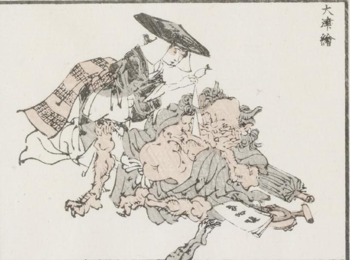

鬼；オニ

奉加帳、太鼓、唐傘を脇に置き、鬼が寝込んでいる。編み笠にほっかぶり姿の女が、布のようなものを鬼の鼻先に垂らしている。
著作者：牧墨僊／出典：親書誌：U426_nichibunken_0097：滑稽洒落狂画苑；コッケイシャレキョウガエン／日付：2007／資源識別子：U426_nichibunken_0097_0008_0000
Copyright (c)2010- International Research Center for Japanese Studies, Kyoto, Japan. All rights reserved.